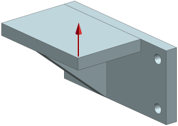
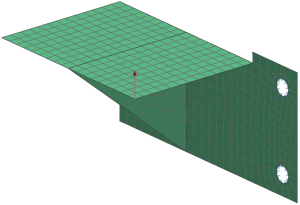
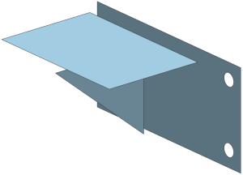
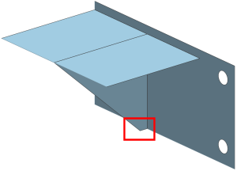
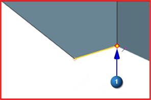
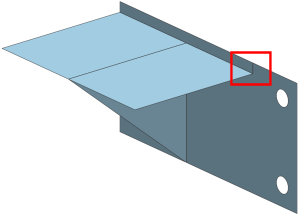
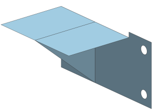
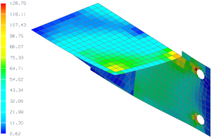

Geometry abstraction project
Advanced Simulation contains geometry abstraction tools to prepare CAD geometry for FEM modeling. In the following exercise, you will use the geometry abstraction tools to prepare a welded structure for shell meshing.
Objective
A weldment constructed from two rectangular plates and a reinforcing rib is shown below. Use the geometry idealization and geometry abstraction tools to create a stitched midsurface representation of the structure. After shell meshing, constraining, and loading the model, use the SOL 101 Linear Statics - Global Constraints solution sequence to perform a structural analysis of the weldment.

Required data
|
Property |
Value |
|
Part |
weldment.prt |
|
Solution sequence |
SOL 101 Linear Statics - Global Constraints |
|
Idealization |
Create midsurface |
|
Material |
Steel |
|
Physical Property |
2D element family Thin shell collector type Use the midsurface thickness |
|
Mesh |
CQUAD4 Element size 5 mm |
|
Constraints |
Fix the edges of the holes |
|
Loads |
Apply a 1500 N force as indicated |

Notes
A summary of the steps to complete the analysis is listed below.
-
Open the part file and start Advanced Simulation. Create new idealized part, FEM, and Simulation files.
-
Make the idealized part the displayed part.
-
Promote the three bodies that comprise the weldment.
-
Create midsurface representations of the two plates and the rib.
For a detailed description of how to complete this step, see the Mesh a midsurface activity.
-
Make the FEM the displayed part.
-
Turn off unused polygon bodies. In the Simulation Navigator, expand the Polygon Geometry node and clear the unused polygon bodies. The resulting model will appear as follows:

-
Gaps exist between each of the midsurfaces. To eliminate the gaps, use the Stitch Edge command to manually stitch the free edges to the faces.
-
Manually stitch the top edge of the rib to the top plate.
-
Manually stitch the right edge of the top plate to the side plate
-
Manually stitch the side edge of the rib to the side plate.
The model now appears as follows:

Note
The above sequence of stitching steps causes you to use the Collapse Edge, Split Edge, Split Face, and Face Repair commands in the next two steps. Although the edges can be stitched in a different sequence to achieve the same results with fewer steps, the sequence shown allows you to practice using these additional commands.
-
-
To eliminate the small edge highlighted in the above illustration, use the Collapse Edge command.
Select the starting point of the edge at
 (with the edge highlighted as shown).
(with the edge highlighted as shown).

-
Remove the sliver that runs between the top edge of the side plate and the right edge of the top plate.
-
To separate the sliver from the larger face, use the Split Edge command to split the top edge of the side plate. Then use the Split Face command to split the face of the side plate as indicated.

-
To remove the sliver, use the Delete Face command.

Note
For this model, the collapsed edge and removed sliver were relatively large. If these features were small and not eliminated, the resulting mesh would contain extremely small elements in these areas relative to the remainder of the mesh.
-
-
Mesh the bodies with a CQUAD4 paver mesh having a 5 mm element size and create a mesh collector using the automatic creation feature.
Note
Continuity between adjoining meshes is maintained along edges that were stitched together.
-
Specify steel as the material type by expanding 2D Collectors and editing ThinShell(1).
-
Specify the thickness of the plates using midsurface thickness.
-
In the Simulation Navigator, expand ThinShell(1).
-
Right-click 2d_mesh(1) and select Edit Mesh Associated Data.
-
In the Mesh Associated Data dialog box, from the Thickness Source list, select Midsurface.
-
-
Make the Simulation the displayed part.
-
To fix the edges of the holes, use the Fixed Constraint command.
-
To apply the 1500 N force, use the Force command.
-
Solve the model.
Expected Results
To access the analysis results, in the Simulation Navigator, double-click Results. To view a contour plot of von Mises stress, in the Post Processing Navigator, expand Solution 1. Next, expand Stress - Element-Nodal and double-click Von-Mises.
Because the model consists of shell elements, you should specify the location (for example, top face, bottom face, and so on) for which to display results. Suppose that you want to examine results on the bottom face. To specify results for the bottom face:
-
Use the Set Result command to open the Smooth Plot dialog box.
-
In the Smooth Plot dialog box, from the Shell list, select Bottom.
The resulting contour plot (in MPa) of von Mises stress on either the top or bottom face of the shell elements should look similar to the one shown below.

Completed project
For your reference, a completed model for this project is located in the ..\projects\solved_project_models folder.